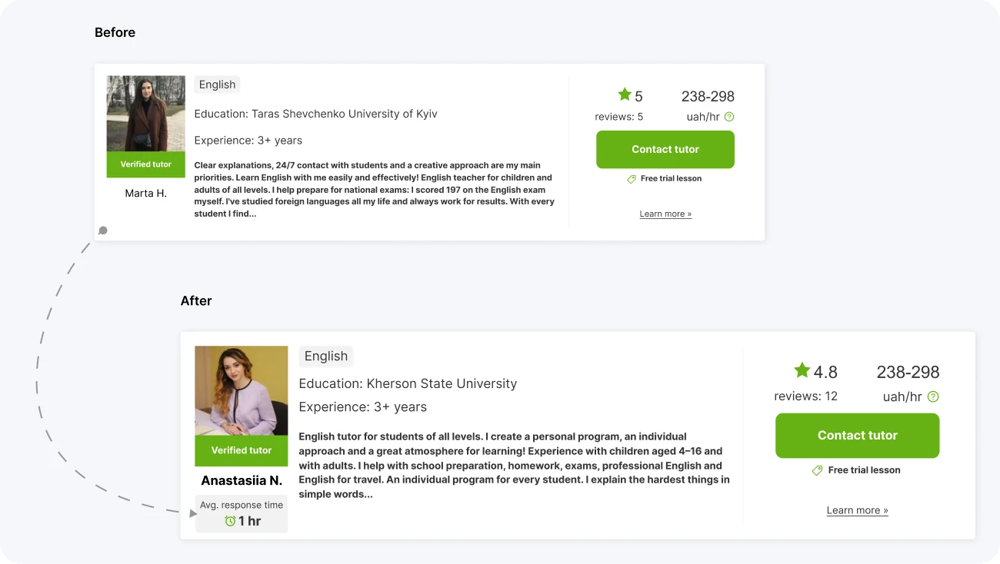
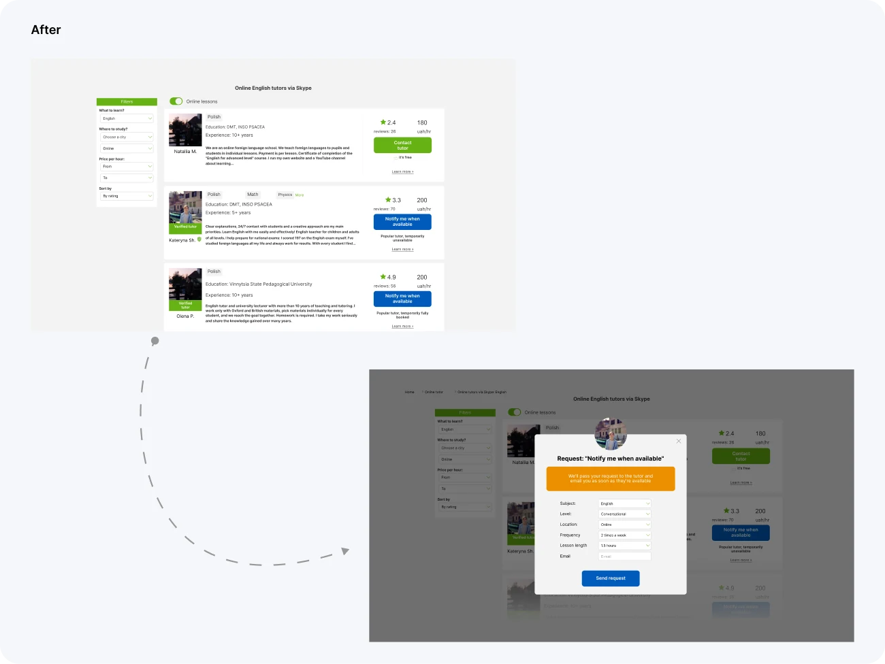
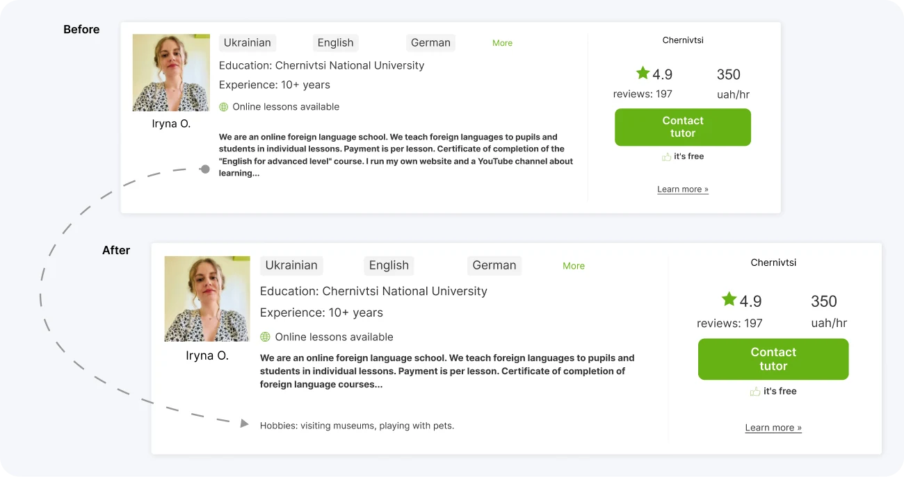
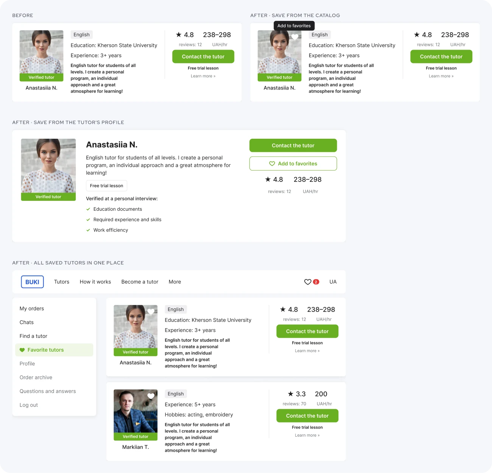
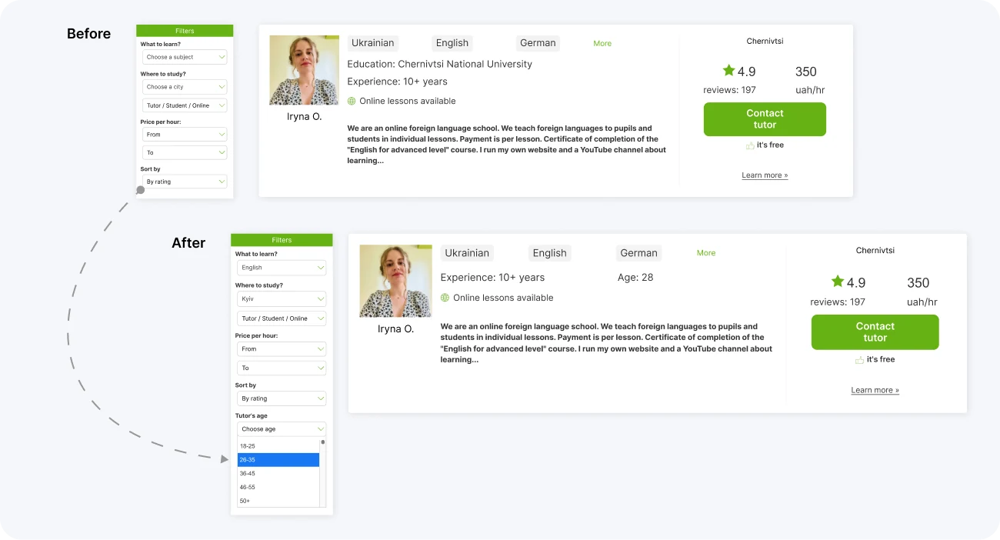
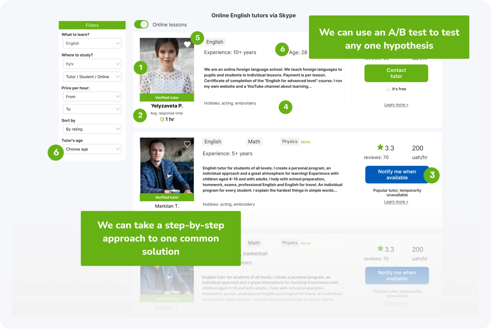

Tutoring marketplace · UX improvement · 2023
Buki
Tutor search UX improvement. Buki is a Ukrainian tutoring service with search for all subjects. We analyzed the existing flow of finding a tutor and proposed UX improvements.
- Problem
- Our hypothesis: users go through many unnecessary interactions to find the information they need about a tutor in the catalog
- Tasks
- Improve the Tutor Catalog and Tutor Profile pages, where users send a request. Reduce the clicks and time from first interaction to submitting an application. Provide comprehensive information in the catalog. Keep the existing UI
- Team
- UI/UX designers: Anastasia Hrubalska, Viktoriia Okhrimchuk, Matiienko Olena and me
- My role
- Conducted in-depth interviews, created part of the Value Proposition Canvas and a customer journey map from the findings, formulated hypotheses, added and tested one new feature: search for a tutor by age
Process
- Brief1 day
- Brainstorm2 days
- Competitor analysis2 days
- User interviews2 weeks
- Value Proposition Canvas1 week
- Prioritization of hypotheses2 days
- Design1 week
- Usability testing after redesign1 week
Research
From 15 interviews to 10 prioritized hypotheses
15
in-depth interviews with users who searched for a tutor in the last six months
Prioritization
We voted on the hypotheses to pick the top 10, because the presentation to the stakeholder was limited in time. The criteria:
- How well it solves the problem
- User benefit
- Speed and ease of implementation
- Business benefit
- Measurability of success
Our solutions
Six changes to the catalog and the tutor profile
Solution 01
Photo of the tutor
From research
“The photo is too explicit for a teacher”
“Blurry or irrelevant photo”
“I choose emotionally”
“I choose by the smile and the teacher's eyes”
Insight
Users want to see what a teacher looks like: the profile should have a photo, and it should be relevant.
Solution
We made the photo mandatory at registration, increased its size and added instructions, so tutors can upload high-quality photos.

Solution 02
Response time
From research
“I do not see the teacher's activity”
“It seems that the service is lifeless”
“I don't like waiting for a long time for a response”
Insight
Users don't like it when tutors take a long time to respond, especially when they need a teacher urgently.
Solution
We added the tutor's average response time to the profile. Users can skip tutors who respond slowly and focus on those who respond quickly.

Solution 03
Occupied slots
From research
“Finding a tutor is very dependent on seasonality: it is difficult to find a tutor when everyone is looking”
“Ready to wait for a teacher if they meet all the requirements and the search is not urgent”
Insight
The tutor's schedule shows free and busy time, but a requested free slot often turns out to be taken by another student.
Solution
Tutors can close enrollment and show a "Temporarily busy" button. Users see right away that the tutor is busy, but can still study with them later.

Solution 04
Hobbies
From research
“How to showcase a teacher's hobbies and lifestyle?”
“Have similar interests to the tutor”
Insight
Users want lessons to feel easy, so they look for a tutor with similar interests. The profile had no information beyond the subjects.
Solution
We added "Hobbies" to the profile, so users can choose a tutor with similar interests.

Solution 05
Favorites
From research
“It's hard to compare the teachers I like”
“It's difficult to find a pre-reviewed tutor when there are many tutors with the same name”
Insight
There are many tutors, and it's hard to return to the profile of the one you liked.
Solution
We proposed "Add to favorites" on the catalog page and on the tutor's page. Success criterion: conversion from favorites is higher than from the catalog.

Solution 06 My feature
Search by age
From research
“How can we help users find a tutor by age?”
“Ability to analyse age and appearance”
Insight
People care about the tutor's age, to have common topics and choose convenient ways of learning.
Solution
We added an age filter to the catalog, so users save time and immediately see tutors who match their idea of the ideal teacher.

Conclusion
The updated catalog, and how to validate it
